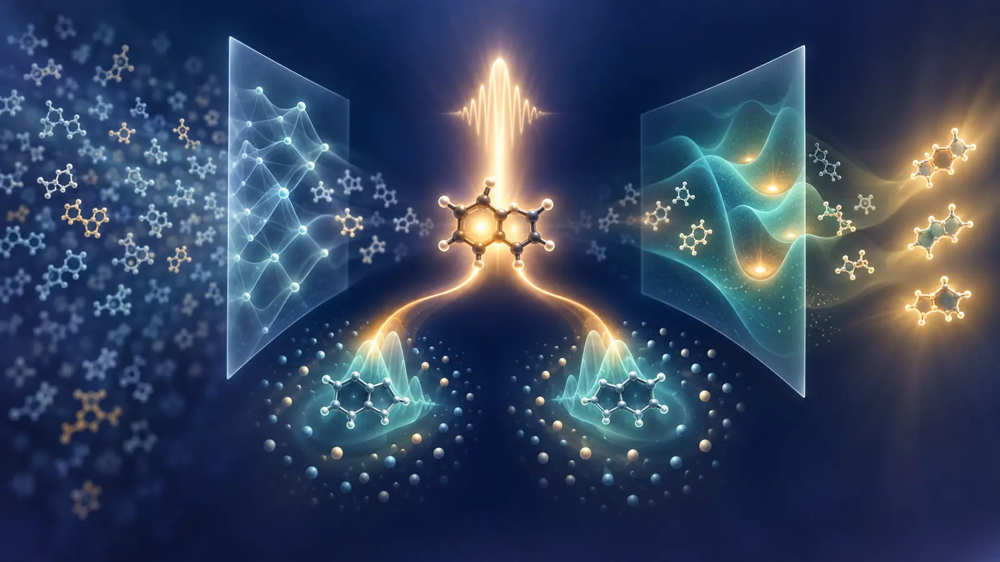

희소한 여기상태 조건을 겨냥한 분자 역설계의 검증 기준
2026년 9월 11일부터 17일까지 공개된 문헌은 TADF 발광체나 PhOLED host를 직접 설계한 결과를 내놓지 않았다. 대신 OLED 분자 역설계가 실제로 부딪히는 세 가지 문제를 선명하게 드러낸다. 목표 여기상태 조건을 만족하는 분자는 화학공간에서 드물고, 생성모델의 높은 hit rate는 계산 라벨의 타당성에 종속되며, 분자 내부의 전자상태 정확도만으로 host 환경에서의 삼중항 동역학을 설명할 수 없다.
이번 주의 중심 논문은 singlet fission 분자를 생성·예측하는 폐루프다. 저자들은 약 1억 개 생성 구조를 평가하고 무작위 1%를 TDDFT로 확인해, 자신들이 정의한 singlet-fission 에너지 기준의 90.8% 충족률과 합성 접근성을 고려한 283,559개 후보 데이터베이스를 보고했다. 이는 희소한 다중 여기상태 조건을 생성 과정에 직접 넣은 중요한 사례다. 그러나 이 수치는 TADF 효율, OLED 소자 수명 또는 실험 합성 성공률이 아니다.

그림 1. 이번 리뷰를 위해 생성한 개념 일러스트. 희소한 여기상태 조건, 생성–검증 병목, host 핵스핀 환경을 시각화했다. 묘사된 분자·파동함수·구조는 특정 화학구조, 측정 morphology, 정량 곡면 또는 실행 가능한 양자회로가 아니다.
레이아웃을 검증한 영문 기술 브리프는 PDF로 내려받을 수 있다.
먼저 읽을 순서
- Navigating Sparse Singlet Fission Chemical Space — 약 1억 개 생성 구조와 1% TDDFT 검증으로 희소한 다중 여기상태 조건을 직접 다룬다.
- Understanding the spin coherence of molecular photoexcited triplet states — pentacene/para-terphenyl에서 guest와 host 핵스핀의 역할이 자기장에 따라 바뀜을 계산한다.
- DMRG excitation energies improved by machine learning — 최대 34 π-electron 계에서 작은 bond dimension의 여기 에너지를 ML로 보정한다.
- QALPA — E(3)-equivariant diffusion, active learning, DFTB3+MBD를 묶어 희소 물성영역을 탐색한다.
- Autonomous LLM agents for multireference chemistry — 558개 transition benchmark에서 active-space 선택 자동화의 성능과 실패를 수치화한다.
- Fraglingo — fragment identity와 attachment를 같은 latent retrieval 문제로 만들고 7개 물성을 동시에 제어한다.
- Nonempirical TDDFT for nonlocal XC potentials — 비국소 XC를 쓰는 응답계산의 f-sum 불일치를 계산비용 증가 없이 교정한다.
- Leakage-aware VQE ansatz criterion — noiseless statevector에서 projected energy와 particle-number leakage가 분리될 수 있음을 보인다.

그림 2. 리뷰어가 구성한 정성적 근거 지도. 위치는 OLED workflow와의 근접성 및 원 논문의 검증 수준을 나타내며, 논문 간 성능 순위가 아니다. 8편 모두 프리프린트다.
1. 직접 OLED·TADF·PhOLED 논문은 없었다
이번 7일 범위에서 TADF emitter, PhOLED host, host–dopant/exciplex 또는 OLED 소자를 직접 설계·합성·측정한 새 primary record는 찾지 못했다. 아래 연구는 singlet fission, 분자 삼중항, 여기상태 계산, 생성모델과 VQE 진단을 다룬다. 8월 21일·28일, 9월 4일·11일 발송분에 포함된 항목은 반복하지 않았다.
2. 약 1억 개 생성 구조에서 희소한 singlet-fission 조건을 찾다
Longfei Lv, Li Fu, Si Zhou, Lingzhi Zhao, Jijun Zhao의 Navigating Sparse Singlet Fission Chemical Space: An Intelligent Generative-Predictive Paradigm은 9월 14일 공개된 프리프린트다.
원 논문이 보여준 것
구조 생성기, 물성 예측기, 다중 기준 검증을 반복적으로 연결해 singlet
fission에 필요한 저에너지 여기상태 관계를 만족하는 분자를 농축했다. 약
1억 개 생성 구조를 고속 평가하고 무작위 1%를 TDDFT로 검증했을 때 조건
충족률은 90.8%였다. 최종 데이터베이스는 여기상태 energetics와 synthetic
accessibility가 유리하다고 평가된 283,559개 후보를 담는다. 저자들은
CN([O])N(C)[O] fragment가 기준 충족과 강하게 연관된다고
해석했다.
한계와 OLED 번역
보고된 90.8%는 저자 정의의 singlet-fission 에너지 필터에 대한 TDDFT hit rate다. 실험 합성, 결정 packing, fission rate, exciton diffusion 또는 소자 효율 검증이 아니다. 1% 무작위 검증은 대규모 예측의 내부 일관성을 점검하지만, TDDFT 자체의 systematic error나 생성분포의 scaffold bias를 제거하지 않는다.
OLED에서는 이 구조를 ΔE_ST 하나가 아니라 S1/T1/Tn ordering, NTO 기반 CT/LE character, oscillator strength, SOC 또는 spin-vibronic proxy의 동시 조건으로 바꿀 수 있다. 마지막 gate에는 고수준 전자구조, 반응경로 기반 합성가능성, host 환경 계산을 분리해서 둬야 한다.
3. 삼중항 코히런스는 분자와 host가 함께 정한다
Ecaterina Păunică와 Sam L. Bayliss의 Understanding the spin coherence of molecular photoexcited triplet states from first principles은 9월 15일 공개됐다.
저자들은 pentacene guest/para-terphenyl host의 Hahn-echo decoherence를 generalized cluster-correlation expansion으로 계산했다. zero field에서는 guest의 약 6개 핵이 주된 decoherence source였고, high field에서는 약 45개 host 분자에 걸친 약 600개 수소가 필요했다. high-field host-only T2는 약 8.9 μs로 전체계와 비슷한 반면 guest-only T2는 약 65 μs였다. longitudinal zero-field splitting parameter D가 커질수록 T2가 연장되는 경향도 보고했다.
이는 OLED triplet lifetime이나 RISC를 직접 계산한 연구가 아니며, optically detected spin coherence용 benchmark crystal을 다룬다. 그럼에도 분자 고유 descriptor만으로 삼중항 거동을 학습하는 접근의 한계를 분명히 한다. OLED 파이프라인에서는 candidate–host pair에 대해 hyperfine/SOC proxy, host nuclear composition, packing ensemble을 별도 조건으로 기록해야 한다.
4. 작은 DMRG 계산을 ML로 외삽해 여기 에너지를 회복하다
Pavlo Golub과 Libor Veis의 Fast and Accurate Excitation Energies from Density Matrix Renormalization Group Calculations Improved by Machine Learning은 9월 11일 공개됐다.
DMRG를 complete-active-space solver로 사용하고, truncation error와 entanglement graph descriptor를 ML 입력으로 삼아 S1–S0 gap을 큰 bond dimension 기준으로 보정한다. polycyclic aromatic test에는 최대 34 π-electron 계가 포함됐다. octacene은 D<200을 제외하면 1 mHa 안의 refinement를 보였고, ovalene·aza-[4]triangulene·diazadibenz Chrysene은 작은 D에서 오차가 6 mHa까지 갔다가 D≈200–500에서 약 1.6 mHa로 줄었다. 비스(phenalenyl)은 학습분포와 다른 entanglement pattern 때문에 가장 어려웠다. 비교 가능한 정확도를 순수 DMRG로 얻으려면 계에 따라 D≈3,000–8,000이 필요했다.
결과는 선택된 π-system과 active space에 대한 프리프린트 검증이며 oscillator strength, triplet, SOC 또는 geometry relaxation을 포함하지 않는다. OLED 적용에서는 low-D DMRG+ML을 모든 후보의 oracle로 쓰기보다, TDDFT가 불안정한 CT/LE mixing·biradical 후보의 escalation test로 두고 entanglement-pattern OOD를 함께 표시하는 편이 안전하다.
5. property-guided diffusion이 희소한 QM 영역을 탐색하는 방식
Michael Hanna, Julian Cremer, Zekiye Erarslan, Leonardo Medrano Sandonas의 QALPA: Property-guided diffusion modeling for efficient exploration of chemical spaces of flexible molecules은 9월 15일 공개됐다.
QALPA는 E(3)-equivariant diffusion, active learning, 빠른 QM/ML 평가를 결합한다. QM7-X와 더 큰 Aquamarine 분자를 함께 학습해 크기 분포 밖 일반화를 노렸고, 새 alloQM 데이터셋은 241개 allosteric molecule의 6,253 conformer를 DFTB3+MBD로 계산한다. alloQM과 QM7-X를 합친 47,790 conformer에서 six-step trajectory로 many-body dispersion energy와 HOMO–LUMO gap 영역을 탐색했으며, 169개 추가 분자를 생성했다고 보고했다.
DFTB3+MBD와 EquiDTB26는 효율적인 labeler지만 OLED의 S1/T1·SOC를 보장하지 않는다. 원소도 H, C, N, O, P, S, Cl로 제한되고 최대 78 atoms다. 직접 번역은 QM7-X식 3D conformer coverage를 유지하면서 navigation coordinate를 S1, T1, CT/LE character와 conformational variance로 교체하고, 각 active-learning round를 동일한 TDDFT/TDA protocol로 다시 라벨링하는 것이다.
6. autonomous agent의 multireference chemistry 성능은 context에 민감하다
Victor Chang Lee와 James M. Rondinelli의 Can Autonomous LLM Agents Execute Multireference Quantum Chemistry Calculations?은 9월 11일 공개됐다.
agent는 active space와 state averaging을 선택하고 ORCA job을 실행·분석하며 모든 결정을 audit log에 남겼다. QUESTDB의 558개 vertical transition에서 unguided baseline은 coverage 24.9%, MAE 0.373 eV였다. decision ladder를 추가하면 coverage 44.1%, MAE 0.339 eV가 됐다. published workflow 정보를 완전히 제공한 replication setting은 378/558 transition을 점수화해 전체 coverage 67.7%, MAE 23 meV를 보였고, target calculation의 42%를 첫 시도, 75%를 7회 안에 해결했다.
23 meV는 agent가 방법을 새로 발견한 조건이 아니라, 계산 recipe를 충분히 제공받아 재현한 상한에 가깝다. OLED high-throughput에 적용하려면 사람이 정한 active-space heuristic, 실패 recovery, state identity matching을 versioned protocol로 고정하고 agent 성공률과 계산 정확도를 분리해서 보고해야 한다.
7. attachment-aware fragment retrieval과 다중 물성 제어
Thao Nguyen, Jeonghwan Kim, Zhenhailong Wang, Heng Ji의 Fraglingo: Molecular Design via Attachment-Aware Autoregressive Fragment Generation은 9월 11일 공개됐다.
Fraglingo는 fragment identity와 결합 위치를 continuous latent에서 함께 예측하고 nearest-neighbor retrieval로 다음 fragment를 선택한다. wildcard-anchored readout은 현재 attachment site 관점에서 성장 중인 분자를 표현한다. 7개 physicochemical property를 동시에 맞추는 benchmark에서 BFE fragmentation은 validity 100.0%, strict Joint@1× 69.65%, relaxed Joint@2× 97.75%, 평균 6.56/7 property satisfaction을 기록했다. 학습 때보다 4배 큰 fragment library도 retraining 없이 검색했다.
이 benchmark의 조건은 logP, MW, QED, TPSA, HBD, HBA, rotatable bonds이며 OLED 여기상태나 합성 route가 아니다. 100k에서 1M molecule로 늘려도 joint control이 일관되게 좋아지지 않았고, continuous-retrieval objective를 MSE로 바꾸면 Joint@1×가 69.65%에서 26.85%로 떨어졌다. OLED 적용에서는 fragment vocabulary를 reaction-compatible building block으로 만들고, attachment 선택마다 steric torsion과 excited-state surrogate 불확실성을 함께 추적해야 한다.
8. 비국소 XC를 쓰는 TDDFT의 응답 일관성
Zhandos A. Moldabekov, Michele Pavanello, Thomas D. Gawne, Jan Vorberger, Tobias Dornheim의 Nonempirical Time-Dependent Density Functional Theory Framework for Nonlocal Exchange–Correlation Potentials은 9월 16일 공개됐다.
meta-GGA·hybrid처럼 orbital-dependent nonlocal XC potential을 표준 linear-response TDDFT에 넣으면 density-matrix response의 비국소성이 일관되게 반영되지 않아 spectrum이 악화될 수 있다. ambient Al의 plasmon에서 r2SCAN/HSE06는 실험 shift를 1.5 eV 이상 과대평가했다. 저자들은 nonlocal KS Hamiltonian의 exact f-sum rule을 복원하는 additive kernel correction을 제시했고, Al·Si·C 및 warm dense Al의 XRTS/EELS와 비교했다. GPAW 구현은 추가 계산비용 없이 적용된다고 보고했다.
검증 대상은 molecular exciton이 아니라 periodic solid의 collective density response다. OLED 번역은 수치를 옮기는 것이 아니라, advanced functional을 썼다는 사실만으로 excitation spectrum이 자동 개선되지 않는다는 점이다. TDDFT 라벨 생성에서는 functional·kernel·pseudopotential의 response consistency와 sum-rule check를 provenance에 포함해야 한다.
9. VQE에서는 projected energy와 leakage를 함께 봐야 한다
Yuan-Chieh Chen의 Energy Is Not Enough: Leakage-Aware Ansatz Criterion for Variational Quantum Eigensolvers은 9월 11일 공개됐다.
noiseless statevector 결과
STO-3G, Jordan–Wigner, 8 qubit의 H4, H6, BeH2, LiH에서 particle-number sector 밖 probability를 leakage로 정의했다. projected-energy optimization은 BeH2와 LiH에서 200회 모두 chemical accuracy 안의 projected energy를 냈지만 mean leakage는 각각 0.398과 0.426이었다. H4의 30-parameter hardware-efficient ansatz에서는 mean leakage가 0.9574까지 올라갔는데도 projected energy는 낮아졌다. UCC 계열은 구조적으로 leakage를 0으로 만들지만 ground-state accuracy까지 보장하지는 않았다.
adaptive hybrid selection은 일부 budget에서 one-shot SelectedUCC보다 낮은 mean projected error를 보였다. 예를 들어 H4 chain, m=16에서 9.49×10^-4 Ha가 1.45×10^-4 Ha로 줄었다. 그러나 모든 결과는 finite-shot·noise·hardware가 없는 statevector simulation이다. gate count, routing, sampling cost, 오류완화 또는 classical wall time의 동등 비교도 없다.
OLED active-space VQE를 검토할 때는 raw energy, projected-sector energy, particle-number/spin leakage, parameter 수, two-qubit depth, shots와 classical benchmark를 한 표에 둬야 한다. 이 논문은 quantum advantage가 아니라 보고 기준을 제안한다.
10. 이번 주 실행안

그림 3. 이번 문헌을 바탕으로 리뷰어가 제안한 OLED 역설계 workflow. 어느 원 논문도 이 전체 과정을 end-to-end로 수행하지 않았다.
12–24개 donor–acceptor scaffold에서 reaction-compatible fragment attachment로 1,000–5,000개 후보를 만든다. low-cost layer는 xTB/DFTB geometry와 calibrated excited-state surrogate를 쓰되, 목표는 S1, T1, ΔE_ST, oscillator strength, CT/LE score의 joint window로 정의한다. 상위 1%는 동일한 conformer ensemble과 TDDFT/TDA protocol로 다시 계산하고, uncertainty가 크거나 state-order가 뒤집히는 10–20개만 low-D DMRG+ML 또는 multireference calculation에 보낸다.
검증용 split은 random molecule이 아니라 scaffold와 attachment motif 기준으로 나눈다. host pair 2–3종에서는 dimer separation·torsion scan과 hyperfine/SOC proxy를 추가한다. 산출물에는 각 gate의 survival rate, OOD score, 계산 실패, 합성 route 존재 여부를 남긴다. 이렇게 해야 90%대 생성 hit가 OLED 후보의 실질적 검증률로 오해되는 일을 막을 수 있다.
11. 근거 공백
이번 범위에는 다음 주제를 직접 다룬 신뢰할 만한 새 자료가 없었다.
- TADF emitter·PhOLED host·host–dopant/exciplex의 직접 합성·소자 성능
- OLED degradation, stability와 operational lifetime
- SELFIES-specific 제약, CRBM 또는 Boltzmann-machine molecular sampling
- D-Wave/quantum annealing 또는 chemistry QUBO의 동등 예산 classical baseline
- QAOA의 분자설계 실증 또는 실제 QPU의 OLED-scale VQE
결론
이번 주 문헌은 희소한 여기상태 조건을 다루는 생성모델이 빠르게 커지는 동시에, 검증의 단위도 넓어져야 함을 보여준다. singlet-fission 연구는 1억 개 규모의 탐색과 90.8% TDDFT hit를 제시했지만, 삼중항 코히런스 연구는 host의 수백 개 핵스핀이 동역학을 지배할 수 있음을 보였다. DMRG+ML과 multireference agent는 더 높은 정확도에 접근하는 경로를 제시하되, 각각 entanglement OOD와 workflow context 의존성을 남긴다.
따라서 OLED 역설계에서 가장 중요한 모델 지표는 단일 hit rate가 아니다. 생성 조건, 전자구조 fidelity, host 환경, 합성가능성과 out-of-distribution 검증이 서로 독립적으로 기록되어야 한다. 양자 계산도 projected energy만으로는 충분하지 않으며, leakage와 실제 실행비용까지 포함한 자원 원장이 필요하다.
References
- L. Lv et al., “Navigating Sparse Singlet Fission Chemical Space: An Intelligent Generative-Predictive Paradigm,” arXiv:2609.15136v1 (14 Sep 2026). 프리프린트; TDDFT 검증.
- E. Păunică and S. L. Bayliss, “Understanding the spin coherence of molecular photoexcited triplet states from first principles,” arXiv:2609.16851v1 (15 Sep 2026). 프리프린트; 고전 first-principles/CCE 계산.
- P. Golub and L. Veis, “Fast and Accurate Excitation Energies from Density Matrix Renormalization Group Calculations Improved by Machine Learning,” arXiv:2609.12616v1 (11 Sep 2026). 프리프린트; 고전 DMRG+ML.
- M. Hanna et al., “QALPA: Property-guided diffusion modeling for efficient exploration of chemical spaces of flexible molecules,” arXiv:2609.16527v1 (15 Sep 2026). 프리프린트; 생성모델+DFTB3/MBD.
- V. C. Lee and J. M. Rondinelli, “Can Autonomous LLM Agents Execute Multireference Quantum Chemistry Calculations?” arXiv:2609.13357v1 (11 Sep 2026). 프리프린트; ORCA workflow benchmark.
- T. Nguyen et al., “Fraglingo: Molecular Design via Attachment-Aware Autoregressive Fragment Generation,” arXiv:2609.13519v1 (11 Sep 2026). 프리프린트; 생성 benchmark.
- Z. A. Moldabekov et al., “Nonempirical Time-Dependent Density Functional Theory Framework for Nonlocal Exchange–Correlation Potentials,” arXiv:2609.18584v1 (16 Sep 2026). 프리프린트; 고전 TDDFT와 실험 spectrum 비교.
- Y.-C. Chen, “Energy Is Not Enough: Leakage-Aware Ansatz Criterion for Variational Quantum Eigensolvers,” arXiv:2609.13521v1 (11 Sep 2026). 프리프린트; noiseless statevector, QPU 실행 없음.
Publication record. Responsible editor: Hyun-Jung Kim. AI assistance: OpenAI Codex Work Mode. Evidence cutoff: 17 September 2026. 수치와 실행 경계는 원문을 따랐으며 OLED workflow 번역과 이번 주 실행안은 리뷰어의 해석·제안이다. 선정된 8편은 모두 프리프린트다.